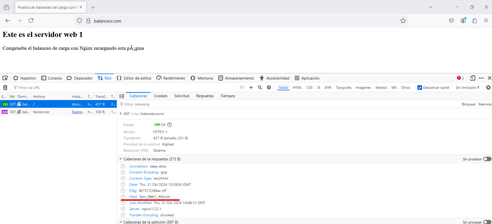

Práctica 2.4.- Balanceo de carga con proxy inverso en Nginx
1.- ¿Qué es un balanceador de carga?
Un balanceador de carga distribuye las solicitudes entrantes del cliente entre un grupo de servidores, en cada caso devuelve la respuesta del servidor seleccionado al cliente apropiado.
2.- Tarea
El primer paso será configurar dos servidores web Nginx con dos máquinas Debian, además de utilizar el proxy inverso Nginx que configuramos en la práctica anterior. A continuación, modificaremos la configuración añadiendo lo necesario:
- Cada servidor web presentará un sitio web específico.
- El
webserver2debe tener la IP asignada de forma fija mediante DHCP. - El
proxy inverso, habrá que configurarlo para que realice el balanceo ce carga. - Realizaremos las peticiones HTTP desde el navegador de nuestra máquina anfritiona.
La red quedará de la siguiente manera:

Las peticiones se harán desde el navegador al proxy inverso, que este las repartirá entre los dos servidores web.
Accederemos a http://balanceo yu observaremos que las peticiones se van repartiendo entre el webserver1 y webserver2.
3.- Configuraciones
ATENCIÓN! Los sitios web configurados anteriormente no se van a utilizar, por ello, recomiendo desactivarlos de la carpeta /etc/nginx/sites-enabled con el comando unlink nombre_archivo. si no se hace esto, nos dará error en todas las prácticas restantes.
Ejemplo en webserver1

3.1.- Nginx Webserver1
El primer servidor será el servidor principal que hemos utilizado desde la primera práctica, es decir, el original.
Debemos configurar este servidor para que sirva el siguiente index.html que se debe crear dentro de la carpeta **/var/www/webserver1/html:

- El nombre del sitio web que se debe utilizar en los archivos de
sites-availableque se debe crear para Nginx eswebserver1. - El sitio web debe escuchar en el puerto 8080.
- Debéis añadir una cabecera que se llame
Serv_Web1_vuestronombre.
Creamos un enlace simbólico en sites-enabled y reiniciamos el servidor:
3.2.- Nginx Webserver2
Debe ser un clon del webserver1.
En este servidor se hace una configuración idéntica al webserver1 pero poniendo webserver2 (también en el index.html), así como el nombre de la cabecera añadida, que será Serv_Web2_vuestronombre.


3.3.- Nginx Proxy Inverso
Ya disponemos de los dos webservers ahora configuraremos el proxy inverso como el balanceador de carga.

Donde:
- En el bloque
upstreamson los servidores entre los que se va a repartir la carga. - Le ponemos un nombre, en mi caso:
backend_hosts;
El último paso será añadir tanto en nuestra máquina como en la que va a realizar de balanceo la dirección host de los servidores:
4.- Comprobaciones
Ahora accederemos al sitio web balanceo.com, donde cada vez que refresquemos nos podrá aparecer el contenido del webserver1 o de webserver2.
IMPORTANTE!! Debemos comprobar que en la consola de nuestro navegador, en el apartado de red, tenemos activada la opción de deactivar caché:



4.1.- Comprobación de balanceo de carga
Ahora, comprobaremos que el balanceador funciona correctamente, para ello:
-
Paramos el servicio nginx del webserver1 y comprobamos que todas las solicitudes se envían al webserver2.


-
Ahora lo hacemos a la inversa, paramos el webserver2 y accedemos a
balanceo.com:
5.- Cuestiones
Cuestión 1.- Busca información de qué otros métodos de balanceo se pueden aplicar con Nginx y describe al menos 3 de ellos.
-
Least Connections: Asigna solicitudes al servidor con menos conexiones activas, evitando sobrecargar aquellos que ya están ocupados. Es ideal para servidores de capacidad similar y para situaciones con conexiones persistentes o largas, ya que distribuye la carga de manera eficiente según la disponibilidad de recursos en cada momento.
-
IP Hash: Dirige cada cliente al mismo servidor según su IP, manteniendo la persistencia de sesión. Esto es útil cuando es importante que el usuario permanezca en el mismo servidor durante toda su sesión, evitando problemas de cambio de servidor.
-
Least Time: Asigna solicitudes al servidor con el tiempo de respuesta más rápido, considerando la cola de espera. Es ideal para aplicaciones de baja latencia, como servicios en tiempo real.
Cuestión 2.- Si quiero añadir 2 servidores web más al balanceo de carga, describe detalladamente qué configuración habría que añadir y dónde.
Para añadir 2 servidores más al balanceo de carga, deberemos editar el archivo de configuración de nuestro servidor balanceo y definir los nuevos servidores. Después, añadimos en el fichero /etc/hosts las dos direcciones IP y su respectivo nombre de servidor.
Por último, aplicamos los cambios reiniciando el servidor de nginx.
Cuestión 3.- Describe todos los pasos que deberíamos seguir y configurar para realizar el balanceo de carga con una de las webs de prácticas anteriores. Indicad la configuración de todas las máquinas (webservers, proxy...) y de sus servicios
En los webservers configuraremos el sites-available añadiendole cabeceras para poder identificar a cada webserver correctamente, modificaremos el atributo server_name.
Respecto a la máquina que hace de proxy, modificamos las direcciones IP en el archivo /etc/hosts añadiendo la dirección de cada webserver con su respectivo server_name, además, añadiremos un bloque upstream en el archivo de configuración donde añadiremos los nombres de cada webserver, por último, el nombre de proxy_pass será el nombre que hemos asignado en el bloque upstream.